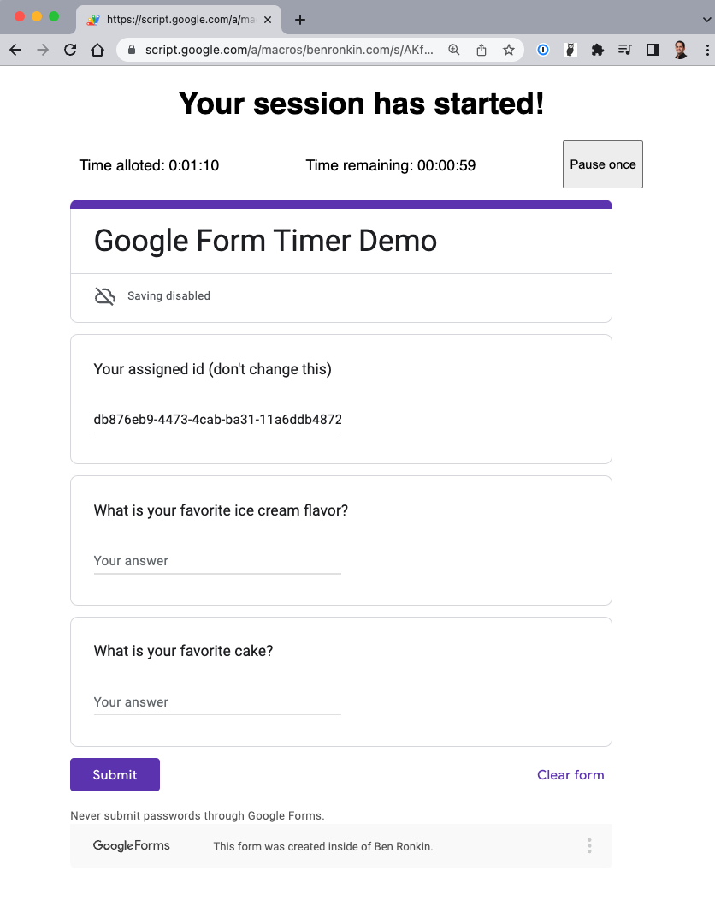

Adding a timer to a form is a great way to limit the time alloted to fill out and submit the form. If you run online quizzes, for instance, a timer mapped to a form can go a long way. Google Form doesn't allow us to embed a timer inside a form, but luckily we can use Google Apps Script to build a web app that has a timer and embeds a form.
In this tutorial we will build such a web app. In addition to the timer, the web app will allow the form user to pause the timer once, and then resume filling out the form (in case they need a bathroom break, for example).
But wait, there's more: our web app will also collect data on how users interact with the form: when they access it, pause it, resume it, run out of time, or submit the form.
When we're done, our timer-boosted Google Form web app will look like this:
Sounds fun? Let's goooo!
Setup
To build this web app, create a brand new Google Apps Script file. It will house the entire code of the web app. You also want to create a simple Google Form with 2-3 questions. Name one of your questions "Your assigned ID".
Store the form responses in a Google Sheet that you can access by clicking on the "Responses" tab inside the form designer, then click on the Google Sheet icon, and select a new Google Sheet. It will be stored in the same Google Drive folder of your form. Open the sheet and add a new tab named "Timesheet". We will log the webapp events in this tab, so go ahead and add three column headers in the first row: "UUID", "Date/Time", and "Event".
The main HTML
For our webapp to work, we need to create an HTML page that will include the timer and embed the Google Form. Inside your Google Apps Script file, create an "index.html" page and paste there the following markup (heads-up, it contains bare-bones styling since I am NOT a designer):
<!DOCTYPE html>
<html>
<head>
<meta charset="UTF-8" />
<meta http-equiv="X-UA-Compatible" content="IE=edge" />
<meta name="viewport" content="width=device-width, initial-scale=1.0" />
<title>My form</title>
<base target="_top" />
<style>
html,
body {
font-family: sans-serif, Arial;
}
h1 {
text-align: center;
}
iframe {
margin: auto;
}
#footer {
background-color: beige;
padding: 5px;
}
#timer {
display: flex;
justify-content: space-between;
width: 600px;
margin: auto;
}
.container {
width: 90%;
margin: auto;
}
</style>
</head>
<body>
<div class="container">
<h1>Your session has started!</h1>
<div id="timer">
<p>
Time alloted:
<span id="time-alloted"></span>
</p>
<p>Time remaining: <span id="time-remaining"></span></p>
<button>Pause once</button>
</div>
<iframe
id="my-iframe"
width="640"
frameborder="0"
marginheight="0"
marginwidth="0"
>Loading…</iframe
>
</div>
<div id="footer"><div class="container">Footer</div></div>
</body>
</html>
Above, we define a "timer" div that includes three components: time alloted, time remaining, and a pause button. We also have the iFrame element, but we don't define the "src" attribute to the form, because we want to set it dynamically with code so that we can append the UUID to it (more on that later).
I'm also including a "footer" div for demo-purposes only: we'll use this tutorial to see how we can change the height of the iFrame programmatically, and the footer will help us visualize the change in the iFrame height. You certainly don't need to include it for the form to work.
The error page
Since we will avail the form to anonymous users, we cannot get their email address. This means that when we provide our form users the URL to our webapp, we need to generate a unique UUID for each user and append it as a query parameter to the end of the URL (we will shortly run a function to do this for us). This UUID gives us certain interesting capabilities. For instance, we can block users who access the form without supplying a valid UUID. We can also block users who access the form for the second time after having visited the form before (even if they didn't submit the form!!!). In such a scenario, we want our web app to serve an error page, instead of the main HTML, notifying the user about the problem. So create a second page named "error.html" and paste the following markup:
<!DOCTYPE html>
<html lang="en">
<head>
<meta charset="UTF-8" />
<meta http-equiv="X-UA-Compatible" content="IE=edge" />
<meta name="viewport" content="width=device-width, initial-scale=1.0" />
<title>Error</title>
<base target="_top" />
<style>
html,
body {
font-family: sans-serif, Arial;
}
h1 {
text-align: center;
}
.container {
width: 90%;
margin: auto;
}
</style>
</head>
<body>
<div class="container">
<h1>Error</h1>
<p style="text-align: center"><?!= serverData.error ?></p>
</div>
</body>
</html>
This is super-simple page. The only notable thing here is the <?!= serverData.error ?> scriplet tag. It allows our Google Apps Script web app to dynamically insert the error message that we will generate into the page before it's rendered in the browser.
Serving the main page
Let's create a function that will deliver our "index.html" page to users of our web app. Inside the "Code.gs" page, enter the following code:
function doGet(e) {
const htmlTemplate = HtmlService.createTemplateFromFile('index');
const htmlOutput = htmlTemplate.evaluate();
return htmlOutput;
}Above, we define the doGet function that creates a template from our index.html file and evaluate it, which generates the HTML code that the function finally returns to the client. Note that "doGet" must be called just that in order for Apps Script to run it automatically.
While we're at it, let's create the function that will serve the error page:
function sendError(message) {
const htmlTemplate = HtmlService.createTemplateFromFile('error');
htmlTemplate.serverData = { error: message };
const htmlOutput = htmlTemplate.evaluate();
return htmlOutput;
}You can see above that we are attaching a "serverData" object to our template. The object contains an "error" key that has the message that the function receives as its value. You may recall that in our error.html page, we use a scriptlet tag to render this serverData.error in our HTML page. That's how we push data from the server to the page.
Go ahead and deploy the script as a web app by clicking on the blue Deploy button. Select "Web app" from the gear icon. Make sure the script executes as you and is available to anyone. When you're done, copy the generated web app URL and store it someplace. We'll use it next.
Generating web app links
Just like we share a Google Form with users by copying its URL, we need to give the web app users its URL. But remember that we need to generate and append a unique ID (UUID) to each URL so that we know who's who. Let's create a function that we can run anytime we need to generate a new URL for a user:
function genFormUrl() {
const webappUrl = 'paste-your-webapp-url-here';
const uuid = Utilities.getUuid();
console.log(webappUrl + `?uuid=${uuid}`);
}The function above will simply generate a random ID and append it to the uuid query parameter at the end of your web app URL. Just paste your webapp url inside the single quotes.
Recording events in our timesheet
Now that we have the facility to generate webapp URLs with unique IDs, we can report on how our webapp is used. Let's create a generic function that will receive a UUID and an event and log them into our timesheet:
function updateServer(uuid, event) {
const now = Utilities.formatDate(
new Date(),
Session.getScriptTimeZone(),
'MM/dd/yyyy HH:mm:ss'
);
const ss = SpreadsheetApp.openById('paste-your-google-sheet-id-here');
const timesheet = ss.getSheetByName('Timesheet');
timesheet.appendRow([uuid, now, event]);
SpreadsheetApp.flush();
}To get the ID of your Google Sheet, simply copy the last sequence of characters from the end of its web address, without any forward slashes. Paste it in the code above. The function will generate a new Date object and convert it to a formatted date/time string. It will append a row that populates the three columns in our Timesheet tab.
Let's record the event of creating a new link. We will use this log momentarily to validate users' UUIDs. Simply insert a call to the function into your genFromUrl function:
function genFormUrl() {
const webappUrl = 'paste-your-webapp-url-here';
const uuid = Utilities.getUuid();
updateServer(uuid, 'Created form'); // Our logging call here
console.log(webappUrl + `?uuid=${uuid}`);
}Let's also record the event of serving the form to a user. Update your doGet function accordingly:
function doGet(e) {
updateServer(uuid, 'Started form'); // Our logging call here
const htmlTemplate = HtmlService.createTemplateFromFile('index');
const htmlOutput = htmlTemplate.evaluate();
return htmlOutput;
}Validating UUIDs
Now that we are logging events, we can validate the users who are accessing our web app, and redirect them to our error page if they don't meet our validation criteria. Below, we run three checks: we ensure that a UUID exists in the webapp url, that the UUID appears in our log (to ensure that the user isn't attaching a fake UUID, and that the user hasn't been served the webapp before):
function doGet(e) {
// Check if uuid is present
if (!e.parameter || !e.parameter.uuid) {
return sendError(
`UUID parameter is missing. Contact form manager for details.`
);
}
// Check if uuid was previously issued
const uuid = e.parameter.uuid;
const ss = SpreadsheetApp.openById('paste-your-google-sheet-id-here');
const timesheet = ss.getSheetByName('Timesheet');
let uuids = timesheet.getRange('A2:A').getValues().flat();
uuids = uuids.filter((u) => u === uuid);
if (uuids.length === 0) {
return sendError(
`UUID "${uuid}" isn't recognized. Contact form manager for details.`
);
}
// Check if form with the uuid was previously started
if (uuids.length > 1) {
return sendError(
`Your UUID "${uuid}" was already used. Contact form manager for details.`
);
}
updateServer(uuid, 'Started form');
const htmlTemplate = HtmlService.createTemplateFromFile('index');
htmlTemplate.serverData = { uuid, timeAlloted: '00:00:10' };
const htmlOutput = htmlTemplate.evaluate();
return htmlOutput;
}Above, we look for the uuid query parameter. If we can't find it then we return our error page with the message. Next, we access our Timesheet tab and get all of our existing UUIDs that have been recorded there. We're looking for the user's UUID. If we cannot find it, then we send the error page for it. Lastly, we ensure that our list of UUIDs contains the user's UUID only once (for when the form was created). If it appears more than once then it means that the user accessed the web app before and we prevent them from accessing it again.
At this point you can test your web app by clicking on Deploy > Test deployment, and accessing the test url. You should see the error page. Next, run genFormUrl, copy the ?uuid=abc123 from the log and attach it to your DEV url. The form should now appear.
The timer, finally
Talk about bury the lede! But all this preparatory work is needed in order to take full advantage of the timer. Without it, the timer is probably useless: users would be able to access the form multiple times.
The first thing we need to do is to pass the UUID from the server to the client, so that we can incorporate it into our form. We can also push the alloted time for the form. Let's change our doPost slightly:
const htmlTemplate = HtmlService.createTemplateFromFile('index');
htmlTemplate.serverData = { uuid, timeAlloted: '00:01:00' };
const htmlOutput = htmlTemplate.evaluate();Above, I'm including the new line that needs to come between the two existing lines. We're attaching the serverData object to the template and initiate the time alloted to 1 minute.
Go back your index.html page and add a <script></script> tag right before the closing </body> tag. We're going to include a lot of client-side Javascript inside the script tag.
First, we need to write the server data to the page, so that we can access it in code:
// Set server data
const uuid = '<?!= serverData.uuid ?>';
const timeAlloted = '<?!= serverData.timeAlloted ?>';Google Apps Script will write the two variables into the page as if we manually typed them.
Next, let's define the components that we will manipulate:
// Declare components
const iframe = document.querySelector('#my-iframe');
const timer = document.querySelector('#timer');
const h1 = document.querySelector('h1');
const button = document.querySelector('button');
const timeRemainingSpan = document.querySelector('#time-remaining');Now we can work on our form iFrame. Add the following code, and I'll explain it below:
// Set the iframe
let loadCounter = 0;
let formSubmitted = false;
let formPaused = false;
iframe.onload = function () {
loadCounter += 1;
if (loadCounter === 1) {
iframe.style.height = '800px';
} else if (loadCounter === 2) {
iframe.style.height = '300px';
formSubmitted = true;
timer.style.display = 'none';
google.script.run
.withSuccessHandler(onSuccessSubmit)
.updateServer(uuid, 'Submitted the form');
function onSuccessSubmit(message) {
h1.innerText = message;
}
}
};Above, we adjust the height of the iFrame whenever it loads. When we set its src attribute (momentarily), it loads the first time. When the user Submits the form, the iFrame loads the confirmation page (that's a second time). So we use "loadCounter" to know the state of the iFrame and adjust its height accordingly.
Note that we are also calling out our server-side updateServer when the user submits the form. Obviously we know that they submit from the fact that Google Form records their submission in the Google Sheet, but I'm showcasing this capability here for completion-sake. Note that the time of the log record will be slightly behind the time that Google Form will report.
Now we need to paste the form URL to the iFrame. But we also want to pre-fill the UUID into our question so that the user doesn't have to do that. To do so, open the Google Form, click the three dots on the right, click "Get pre-filled link", enter 'xxxxx' in the ID question value, click the purple "Get link" button, and then the black "Copy link" button at the bottom of the page.
Now paste the URL in your code and add the delete the 'xxxxx':
iframe.src =
'https://docs.google.com/forms/d/e/your-form-path/viewform?embedded=true&usp=pp_url&entry.your-question-number=' +
uuid;Try reloading the page and see if the form renders. You might want to comment out temporarily the test of multiple UUIDs inside doGet so that you don't need to issue a new UUID any time you work on the code.
Let's initialize the timer:
// Set timer
document.querySelector('#time-alloted').innerText = timeAlloted;
const timeRemaining = new Date();
const [hoursRemaining, minutesRemaining, secondsRemaining] =
timeAlloted.split(':');
timeRemaining.setHours(
hoursRemaining,
minutesRemaining,
secondsRemaining
);Time alloted is static, so we just enter the string from the server. But time remaining is dynamic – we will decrement it every second – so that we store it in a separate variable that is initialized with the hours, minutes, and seconds counts of time alloted.
Decrementing time remaining
We need a function that will reduce time remaining by one second, unless the time has run out, the user has paused the timer (for a bathroom break), or the user has submitted the form. Here's the code:
function updateTimeRemaining() {
timeRemaining.setSeconds(timeRemaining.getSeconds() - 1);
const hh = timeRemaining.getHours();
const mm = timeRemaining.getMinutes();
const ss = timeRemaining.getSeconds();
timeRemainingSpan.innerText =
String(hh).padStart(2, '0') +
':' +
String(mm).padStart(2, '0') +
':' +
String(ss).padStart(2, '0');
if (hh === 0 && mm === 0 && ss === 0) {
iframe.style.display = 'none';
h1.innerText = 'You ran out of time!';
button.disabled = 'disabled';
google.script.run.updateServer(uuid, 'Ran out of time');
return;
}
if (formSubmitted || formPaused) {
return;
}
setTimeout(updateTimeRemaining, 1000);
}The function defines a timeout of one second after which the function wil be called again, if the conditions described above are not met. Note that if the time runs out, we call our server-side updateServer function, so that it can log the fact that time has elapsed.
We can initiate the countdown inside the onload function when loadCounter is 1:
if (loadCounter === 1) {
iframe.style.height = '800px';
updateTimeRemaining();
}Pause and resume
Finally, we can allow the user to pause and resume the form one time when they click on the button. Here's the code:
button.addEventListener('click', () => {
if (button.innerText === 'Pause once') {
formPaused = true;
iframe.style.display = 'none';
button.innerText = 'Resume';
google.script.run.updateServer(uuid, 'Paused the form');
} else {
formPaused = false;
iframe.style.display = 'block';
button.innerText = 'Pause used';
button.disabled = 'disabled';
google.script.run.updateServer(uuid, 'Resumed the form');
updateTimeRemaining();
}
});Above, we add a click event listener to the button. We check its state: if it shows the default "Pause once" caption then we set formPaused to true, which will cause our updateTimeRemaining to pause the timer. The form disappears so that the user cannot continue to work on it. Clicking the button again brings back the form, sets "formPaused" to false, restarts updateTimeRemaining and disables the button. Note that we report on form pause and form resume events.
This is it. If you made it thus far then I'm really proud of you! It's a lot to take in, but I hope you can see the power of this approach. Now you can run analysis in Google Sheet, comparing the form results to the activities you logged, and seeing which UUIDs access the form but don't submit it.
Happy form-timing!